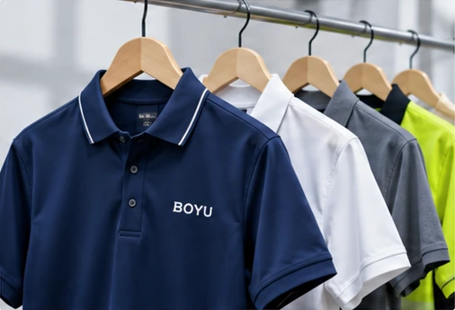
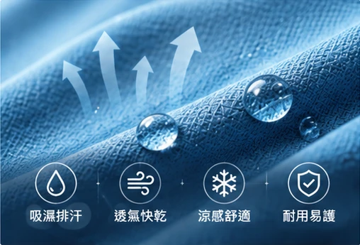
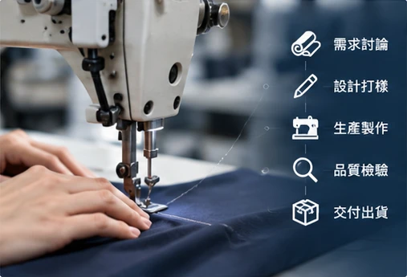

企業 POLO 衫Corporate Polo Shirts01 / POLO
BOYU / CUSTOM APPAREL
你的風格，由你定義。Your Style. Your Way
Your Style. Your Way.
從個人風格到企業形象，以機能布料與台灣工藝，打造專屬服裝。
From personal style to brand identity, create your own apparel with performance fabrics and Taiwanese craftsmanship.
MATERIALS / FUNCTION / CRAFT
TECHNICAL FABRIC SOLUTIONSMaterial-first thinking · Taiwan craftsmanship

CUSTOM MADE / BOYU
為你而製
Made for You
選擇適合你的訂製方式。
Choose your way to customize.

個人訂製For You
選擇款式、布料與細節，洽詢個人及小量訂製。Explore styles, fabrics and details for personal or small-batch projects.
開始訂製Start customizing →企業訂製For Business
為企業與品牌打造專屬服裝。Apparel developed for your business.
了解服務Discover services →精選科技機能布料Performance FabricsFABRIC EXPERTISE
台灣職人工廠製作Taiwanese CraftsmanshipQUALITY-FOCUSED PRODUCTION
彈性小量客製服務Flexible Small-Batch ProjectsTAILORED SOLUTIONS
01 / WHY BOYU
關於 BOYU
About BOYU
BOYU 不只製作服裝，更重視每件服裝背後的材料選擇、穿著情境與製作品質。從企業制服到特殊機能需求，提供完整的專案整合服務。
We look beyond garment production—considering fabric performance, real-world use, and production quality in every project.
01 / MATERIALS
材料選擇專業
Material Expertise
從舒適機能到專利技術及第三方認證布料，依用途、穿著情境與預算協助選材。
Explore performance fabrics, patented technologies and third-party certified options for your project.
PERFORMANCE FABRICS ↗02 / CRAFT
台灣職人工藝
Taiwanese Craftsmanship
結合台灣製作夥伴的經驗，重視版型、細節、工序與品質管理。
Production expertise with attention to fit, details, process, and quality.
CRAFTED WITH CARE ↗03 / FLEXIBILITY
彈性客製整合
Flexible Customization
支援小量及特殊需求專案，依布料、款式與製程評估合適的生產方式。
Small-batch and specialized projects assessed by material, style, and production requirements.
MADE FOR YOUR NEEDS ↗FABRIC INNOVATION / TEXTILE EXPERTISE
02 / TECHNICAL FABRICS
機能布料
Performance Fabrics
我們依照產品用途選擇適合的布料，協助企業在舒適、耐用、機能與品牌形象之間取得平衡。實際機能與環保認證依個別布料規格確認。
We source fabrics to match your application, balancing comfort, durability, function, and brand identity. Performance and sustainability claims depend on individual material specifications.
Moisture ManagementWater RepellencyUV ProtectionRecycled MaterialsComfort & Stretch
諮詢布料需求Discuss Fabric Needs →02A / FABRIC COLLECTION
布料系列
Fabric Collection
從純棉、混紡到機能及環保材料，依穿著需求探索布料。圖片依 BOYU 提供的布料類別整理；材質組成、測試數據及認證以正式規格書為準。
Explore cotton, blends, performance and sustainability-oriented materials. Images are organized by the supplied BOYU fabric categories; compositions, test results and certifications require specification review.
點選下方布料縮圖，即可切換該分類的上方主圖。圖片僅供材料選型討論；實際材質成分、測試數據及認證請以正式規格書為準。
Select a thumbnail beneath each category to change its main fabric image. Images are for material selection only; composition, test data and certifications require official specifications.
03 / CUSTOM APPAREL
服裝系列
Apparel Collection
依照企業需求與穿著情境，提供布料建議、版型開發與客製製作。
Material sourcing, fit development, and customization tailored to workplace needs.

企業外套Corporate Jackets02 / OUTERWEAR

企業襯衫Corporate Shirts03 / SHIRTS
褲裝與裙裝Trousers & Skirts04 / BOTTOMS
* 圖像為概念示意，正式網站請替換為 BOYU 真實成品攝影。
* Conceptual visuals only. Replace with verified BOYU product photography before launch.
04 / FROM IDEA TO DELIVERY
訂製流程
Our Process
我們依照專案特性整合選材、打樣、生產及交付流程。實際交期、最小訂購量與交貨地區依個案評估。
We coordinate materials, samples, production, and delivery according to each project. Lead times, minimum quantities, and shipping destinations are assessed individually.
01
需求諮詢
Consultation
PROJECT BRIEF
02
材料選擇
Fabric Sourcing
MATERIAL SELECTION
03
設計打樣
Development
SAMPLING & FIT
04
生產管理
Production
CRAFT & QUALITY
05
交付服務
Delivery
PROJECT FULFILLMENT
EXPLORE
探索 BOYU
Discover BOYU

布料分類
Fabric Collection
涼感、透氣、吸濕排汗等機能選擇。
Explore cooling, breathable and moisture-management options.
成衣分類
Apparel Categories
從 T-shirt 到工作服的客製方案。
Custom solutions from T-shirts to workwear.

製作流程
Production Process
了解從需求到交付的五個步驟。
Explore five steps from consultation to delivery.
05 / LET'S WORK TOGETHER
開始你的客製專案。
Let's build your next project.
無論是個人訂製、企業制服、品牌開發或布料採購，歡迎分享你的想法。BOYU 將依專案條件評估合適方案。
Tell us about your uniform, technical fabric, or small-batch apparel needs. We will review the project requirements.
BOYU TECH TEX
Textile & Custom Apparel Solutions